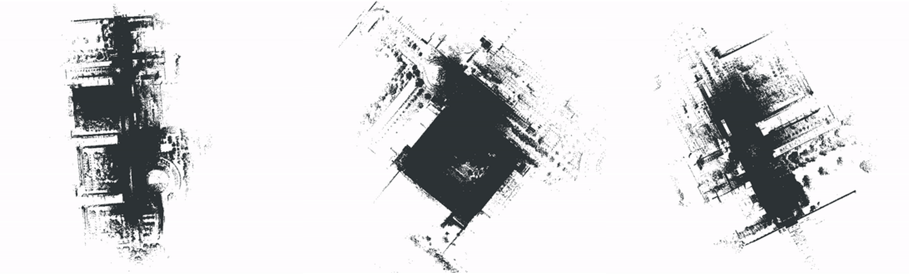

Remove dynamic points
Clean each session map with a sensor-setup agnostic pipeline that combines occupancy information with geometric processing.
IEEE Robotics and Automation Letters · 2024
Maps of real environments change over time. This work presents a modular, cloud-native framework for maintaining 3D maps collected with hand-held and robot-mounted LiDAR systems. It removes dynamic points, aligns maps from different sessions, detects additions and removals, and maintains a versioned base map. By storing changes and session boundaries, the system can reconstruct earlier clean session maps and query changes between sessions without retaining the original input maps. The framework is evaluated using commercial hand-held mapping devices and open-source robot-mounted LiDAR SLAM systems.
From individual mapping sessions to a shared, queryable history of an environment.

Clean each session map with a sensor-setup agnostic pipeline that combines occupancy information with geometric processing.
Bring maps into a common reference frame using feature matching followed by fine registration.
Compare aligned maps to identify geometry that appeared or disappeared between sessions.
Update the base map and store differences and boundaries to reconstruct earlier sessions and query changes.
Read the complete method, experiments, and results in the paper.
@article{yang2024lifelong,
title = {Lifelong 3D Mapping Framework for Hand-held and Robot-mounted LiDAR Mapping Systems},
author = {Yang, Liudi and Prakhya, Sai Manoj and Zhu, Senhua and Liu, Ziyuan},
journal = {IEEE Robotics and Automation Letters},
year = {2024},
doi = {10.1109/LRA.2024.3417113}
}